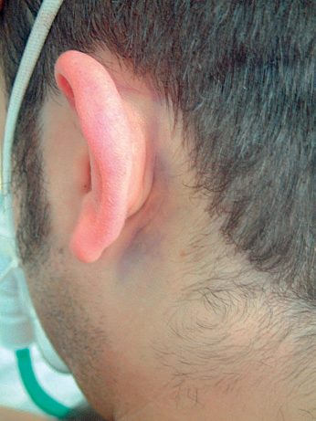
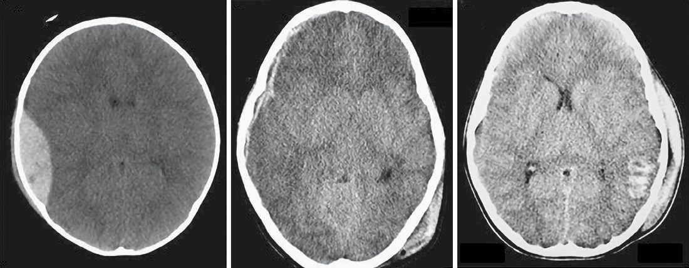
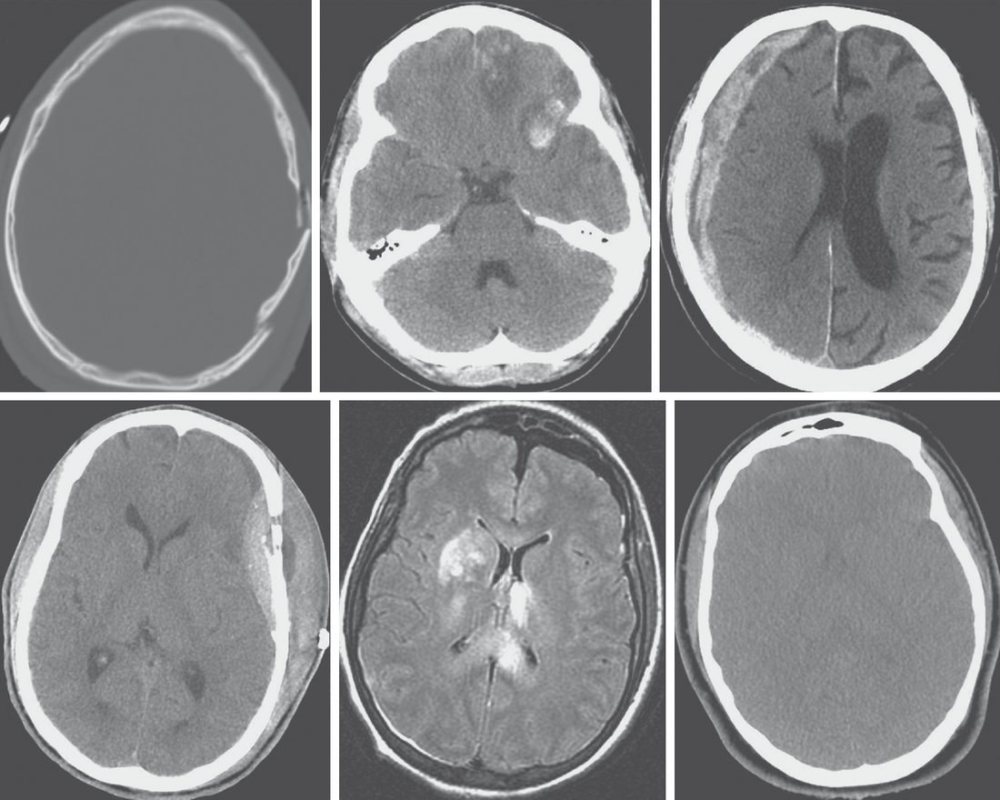
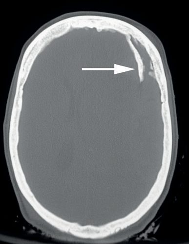

Head Injury (Surgical Aspects)
Summary
- Head injury accounts for 3–4% of emergency department attendances, with an annual incidence of around 1500 per 100,000 population in the UK, and remains the leading cause of death and disability from childhood to early middle age [1].
- Traumatic brain injury (TBI) comprises a primary injury sustained at the moment of impact, which is not medically modifiable, and a secondary injury developing over subsequent hours to days, which is the principal target of medical and surgical management [1][2].
- Head injury is the most common cause of death after reaching the emergency room alive [3].
Definition
Head injury severity is classified by the post-resuscitation Glasgow Coma Scale (GCS): minor (GCS 15, no loss of consciousness), mild (GCS 14–15 with loss of consciousness), moderate (GCS 9–13), and severe (GCS 3–8) [1]. The GCS motor score is the best predictor of neurological outcome [1][3].
Pathophysiology
- Cerebral perfusion pressure (CPP) equals mean arterial pressure (MAP) minus intracranial pressure (ICP); normal cerebral blood flow (~55 mL/min per 100 g brain tissue) is preserved across a MAP range of 50–150 mmHg through cerebral autoregulation, which can be disrupted after trauma [1].
- The Monro–Kellie doctrine holds that the cranium is a rigid box containing a nearly incompressible brain; expanding mass lesions are initially compensated by exclusion of venous blood and CSF, but further expansion produces an exponential rise in ICP [1].
- Uncontrolled ICP rise causes herniation syndromes: subfalcine (cingulate gyrus under the falx), uncal (temporal lobe over the tentorium, compressing CN III), and central/tonsillar herniation compressing the brainstem, producing Cushing's triad (hypertension, bradycardia, irregular respiration) as a late sign of impending herniation ("coning") [1][3].
- Epidural haematoma most commonly results from arterial bleeding (classically the middle meningeal artery) associated with a temporal bone fracture; subdural haematoma most commonly arises from tearing of bridging veins crossing the subdural space [1][3].
- Secondary brain injury is driven by a self-perpetuating cycle of raised ICP, reduced cerebral perfusion, hypoxia, deranged autoregulation, and increased metabolic demand from seizure, pyrexia, and inflammation [1].
Clinical features
- Extradural haematoma classically produces transient loss of consciousness followed by a lucid interval, then rapid deterioration with contralateral hemiparesis, reduced conscious level, and ipsilateral pupillary dilatation, this "talk and die" pattern occurs in only about one-third of cases but is critical to recognize [1][3].
- Chronic subdural haematoma, common in older adults with cerebral atrophy and stretched bridging veins, presents with gradual deterioration over days to weeks, often after a trivial or unrecalled impact, especially on antiplatelet/anticoagulant therapy [1].
- Signs of basal skull fracture include Battle's sign (mastoid bruising, associated with middle fossa fracture and facial nerve injury), "raccoon eyes" (periorbital bruising, anterior fossa fracture), haemotympanum, and CSF rhinorrhoea/otorrhoea [1][3].
- A dilated ("blown") pupil suggests ipsilateral uncal herniation compressing the oculomotor nerve [1][3].
- Concussion presents with confusion and amnesia, without necessarily any loss of consciousness; postconcussive syndrome comprises persistent headache, dizziness, and neurocognitive disturbance [1].
- Cushing's reflex (bradycardia, hypertension, altered/Cheyne-Stokes respiration) is a late sign of impending herniation [3].

Etiology
- Road traffic accidents are the leading cause of head injury (up to 50% of cases), followed by falls and assault; firearms are the third leading cause in the USA [1].
- Non-accidental injury must be considered in children and vulnerable adults, suggested by delayed presentation, injuries of disparate age, retinal haemorrhages, bilateral chronic subdural haematomas, multiple skull fractures, and neurological injury without external signs of trauma [1].
- Intracerebral (intraparenchymal) haematoma, usually frontal or temporal, is the most common brain injury in blunt trauma [3].
- Diffuse axonal injury is a form of primary injury seen in high-energy accidents, usually rendering the patient comatose, and is associated with poor outcomes [1][3].

Diagnosis
- NICE criteria recommend CT within 1 hour for GCS <13 at any point, GCS <15 at 2 hours, focal neurological deficit, suspected open/depressed/basal skull fracture, more than one episode of vomiting, or post-traumatic seizure; CT within 8 hours is recommended for age >65, coagulopathy, dangerous mechanism, or retrograde amnesia >30 minutes [1].
- Similarly, indications for head CT include suspected skull penetration, CSF or blood discharge from nose/ear, hemotympanum, intoxication, altered consciousness, focal signs, any loss of consciousness, and head injury with additional trauma; GCS ≤14 warrants head CT, and GCS ≤8 warrants intubation and ICP monitoring [3].
- On CT, extradural haematoma appears as a lentiform (biconvex) hyperdense collection constrained by dural attachments to the skull; acute subdural haematoma appears as a diffuse concave (crescent-shaped) collection free to spread over the brain surface since the dura is not adherent to the brain; chronic subdural haematoma appears diffusely hypodense [1][3].
- Diffuse axonal injury shows haemorrhagic foci in the corpus callosum and dorsolateral rostral brainstem on CT, but MRI is more sensitive, showing blurring of grey-white matter and multiple small punctate haemorrhages [1][3].
- A cervical spine fracture is found in up to 10% of moderate-to-severe TBI and must be presumed until excluded [1].
- Discharge criteria for minor/mild head injury require GCS 15/15 with no focal deficit, a normal CT (if indicated), no intoxication, and a responsible accompanying adult [1].

Scoring and Severity
- The Glasgow Coma Scale sums eye-opening (1–4), verbal (1–5), and motor (1–6) responses; intubated patients receive a verbal score of "1T" [1][3].
- Sustained ICP >20–25 mmHg is associated with poor outcome; target parameters in neurointensive care include PaCO2 4.5–5.0 kPa, PaO2 >11 kPa, MAP 80–90 mmHg, ICP <20 mmHg, CPP >60 mmHg, and sodium >140 mmol/L [1][3].
- Craniotomy is generally indicated for significant neurological deterioration or midline shift >5 mm on imaging [3].
- Skull fracture surgical indications include depression >1 cm, contamination (open fracture), or persistent CSF leak unresponsive to conservative treatment [3].
- Peak ICP/brain swelling typically occurs 48–72 hours after injury [3].
- The Glasgow Outcome Scale (good recovery, moderate disability, severe disability, persistent vegetative state, death) quantifies long-term recovery [1].
Treatment and Management
- Resuscitation follows ATLS principles, beginning with airway and cervical spine control, with hypoxia and hypotension avoided to prevent secondary injury; blood glucose is checked early to exclude reversible hypoglycaemia [1].
- ICP is controlled first by simple measures, raising the head of the bed, loosening a tight collar, and controlling seizures and pyrexia, before escalating to sedation, analgesia, and paralysis [1][3].
- Mannitol (load 1 g/kg then 0.25 g/kg every 4 hours) or hypertonic saline can be used to temporise/treat raised ICP by an osmotic effect [1][3].
- Modest relative hyperventilation (target PaCO2 30–35 mmHg / 4.5–5.0 kPa) produces cerebral vasoconstriction to lower ICP, but excessive hyperventilation risks cerebral ischemia [1][3].
- Routine (non-directed) corticosteroids in severe head injury increase mortality and are not recommended [1].
- Prophylactic antiepileptics (e.g., phenytoin, fosphenytoin, or levetiracetam for about a week) are given to patients at high risk of early seizures with moderate-to-severe TBI [1][3].
- Blind nasogastric/nasotracheal tube placement is contraindicated with suspected skull base fracture [1][3].
- Anticoagulation should be reversed (vitamin K, prothrombin complex concentrate, or NOAC-specific reversal agents) in patients on anticoagulants with an abnormal head CT; a normal CT still warrants a repeat scan at 8 hours because of the risk of delayed bleeding [1][3].
- Enteral nutrition should begin within 72 hours of injury [1].
- Second impact syndrome (malignant brain swelling after a repeat, apparently trivial injury while still symptomatic) means symptomatic athletes must not return to play [1].
Surgeries
- Significant extradural haematoma requires urgent transfer for surgical evacuation, typically via craniotomy, in deteriorating or comatose patients or those with large bleeds; smaller bleeds may be observed with serial imaging [1].
- Acute subdural haematoma from high-energy injury with significant midline shift or deteriorating neurology requires urgent evacuation, typically by craniotomy or craniectomy [1].
- Chronic subdural haematoma is generally drained through burr holes; if clinically stable, a 7–10 day delay may be used to allow platelet function to normalize after stopping antiplatelet agents, and liquefaction of clot over 7–10 days can allow less invasive burr-hole evacuation even of some acute collections [1].
- ICP monitoring uses an intraparenchymal bolt or an external ventricular drain (which also allows therapeutic CSF drainage), indicated for GCS ≤8 with head injury, suspected raised ICP, or inability to follow the clinical exam (e.g., intubation) [1][3].
- Decompressive craniectomy is considered when ICP cannot be controlled medically, though evidence for long-term outcome benefit is limited [1][3].
- Depressed skull fractures (bone displaced inward by at least the thickness of the skull), usually compound, require exploration and elevation, especially with intracranial air suggesting a dural breach; fractures through air sinuses are managed as open fractures with broad-spectrum antibiotics with or without exploration [1].
- Traumatic intraventricular hemorrhage causing hydrocephalus requires ventriculostomy [3].
- An unstable patient with a blown pupil should have hypotension (e.g., abdominal or pelvic bleeding) addressed before head CT; a burr hole may be considered if head CT access will be significantly delayed [3].

Complications
- Depressed skull fractures carry a high incidence of infection, neurological deficit, and late-onset epilepsy [1].
- Skull base fractures may be complicated by pituitary dysfunction, arterial dissection, and cranial nerve deficits (anosmia, facial palsy, hearing loss); persistent CSF leak can result in meningitis [1].
- Electrolyte disturbance is common in TBI: cerebral salt wasting and SIADH both cause hyponatraemia (worsening brain swelling, so hypotonic fluids are avoided), while impaired ADH secretion causes diabetes insipidus with hypernatraemia [1].
- Post-traumatic seizure cumulative probability ranges from 2% (mild TBI) to 60% (severe TBI with risk factors including intracerebral haemorrhage, depressed skull fracture, and dural tear) [1].
- Coagulopathy after TBI results from release of tissue thromboplastin [3].
- Cervical collars, especially if ill-fitting, may increase ICP and impair airway management [2].
Prognosis
- Prompt evacuation of extradural haematoma without associated primary brain injury carries an excellent prognosis [1].
- Chronic subdural haematoma in the elderly is a common and treatable cause of acute neurological deterioration [1].
- Diffuse axonal injury carries a very poor prognosis [3].
- Penetrating head injury has the worst survival of all head injury types [3].
- UK trauma audit data show higher mortality when severe TBI is managed at non-neurosurgical centers, supporting early transfer regardless of the ultimate need for surgery [1].
- Reduced CPP results in secondary traumatic brain injury and worsens outcomes; hypotension and hypoxia are the principal preventable drivers of secondary injury [2][3].
References
- Bailey & Love's Short Practice of Surgery, 28th ed., Ch. 28 Traumatic brain injury
- Sabiston Textbook of Surgery, 22nd ed., Ch. 36 Management of Acute Trauma
- The ABSITE Review, 2022, Ch. 15, which states normal ICP is ~10, treat if >20, and target CPP >60
- Sabiston Textbook of Surgery, 22nd ed., Ch. 42
- Sabiston Textbook of Surgery, 22nd ed., Ch. 41
- Bailey & Love's Short Practice of Surgery, 28th ed., Ch. 8